開盤（CNBC／《衛報》）
週四開盤
美元／股111.50
CNBC 寫開盤市值近 2.01 兆美元。《衛報》寫開盤一度升 34%，當時估值逾 2 兆美元。這是開盤口徑，不是收市數字。
效力：開盤時點，不可與收市市值合併。
2026年11月20日 · 星期五科技要聞
Anthropic 上市首日用三種口徑寫出一至兩兆美元；微軟官方 agent 套件被植入竊密程式；Google 讓 Gemini 在 Mac 背景代為點擊；IEA 把數據中心寫成電力問題。以下數字分源呈現，不合併。11 月 19 日正刊因用量未能出刊，本稿覆蓋 18 日傍晚至 20 日朝早。
人物：Elon Musk
週三以每股 83 美元向承銷商出售 9.80 億股，代號 ANT CNBC
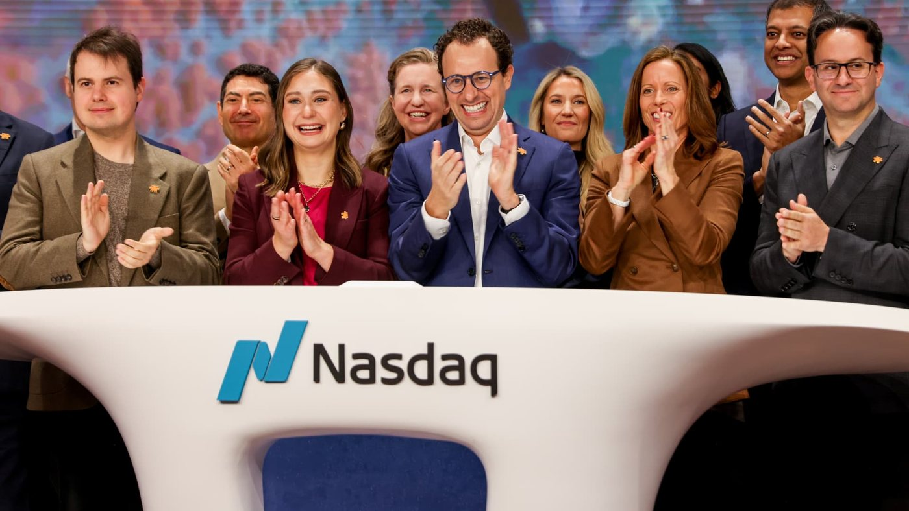
公開市場星期四給 Anthropic 算了三筆帳，卻沒有人能說清這家公司被量過的究竟是哪一筆。這不是計算誤差，是把共識當成資產來賣。
據 CNBC，Anthropic 週三以每股 83 美元向承銷商出售 9.80 億股，募資 813 億美元；股票代號 ANT，週四開盤 111.50 美元，收市 97.17 美元。The Verge 轉述《華爾街日報》稱，83 美元明顯高於本月稍早 70 至 78 美元的指引。《衛報》寫，開盤一度飆升 34%，按當時股價把公司估值寫成逾 2 兆美元；收市股價「略高於 97 美元」，「總市值近 1.3 兆、完全稀釋 1.75 兆」。CNBC 則把開盤市值寫成近 2.01 兆美元；收市的完全稀釋市值是「約 1.8 兆」。同一收盤價，兩家已打開的來源已在「流通」與「完全稀釋」之間相差數千億美元。執行長 Dario Amodei 親自敲鐘，並說：「Today puts the company in a stronger financial position, and in doing so only strengthens our resolve to do the right thing。」
第一性原理很簡單：能用三種口徑描述的東西，通常不是被量過的物理量，而是被推銷的敘事。813 億美元進帳是真的，收市 97.17 美元也是真的；把開盤的「逾兩兆」和收市的「近 1.3 兆」寫成同一個數字，只是為了讓頭條更好賣。TechCrunch 還按約 95 美元的時點，把公益基金、員工認捐與公司配對加總成可能流向慈善的 1,560 億美元——那是記者倒推的估算，不是已經撥出的現金。市場可以為故事付費，電網不會跟著改口徑。你要先分清哪一筆是現金，哪一筆只是把未來折現到今天的氣氛。
開盤（CNBC／《衛報》）
週四開盤
美元／股111.50
CNBC 寫開盤市值近 2.01 兆美元。《衛報》寫開盤一度升 34%，當時估值逾 2 兆美元。這是開盤口徑，不是收市數字。
效力：開盤時點，不可與收市市值合併。
收市流通（《衛報》）
週四收市
總市值近1.3兆
《衛報》寫收市股價略高於 97 美元（CNBC 寫死為 97.17），總市值近 1.3 兆美元。這是流通市值，不是完全稀釋。
效力：收市流通口徑，不可與開盤或完全稀釋合併。
收市完全稀釋
週四收市
完全稀釋1.75–1.8兆
《衛報》寫完全稀釋 1.75 兆美元；CNBC 寫約 1.8 兆美元。同一收市、兩家口徑，不要選一個寫成「市值」。
效力：完全稀釋，且兩源數字本來就不相同。
以上是開盤與收市、流通與完全稀釋的不同口徑，並非同一總數的三種寫法；不宜合併或排名成單一「兩兆公司」。
來源：CNBC；《衛報》；The Verge（轉述 WSJ 定價指引）。圖源：Getty Images（CNBC og:image，Anthropic IPO 現場）。
人物：Steve Jobs
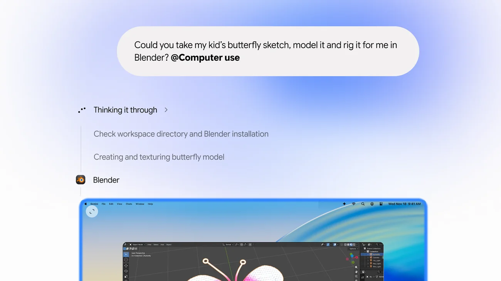
讓模型在背景視窗替你點選單、填表格、跨應用跑流程，不是新介面，是宣告你們不會做介面。This is junk。
據 Google 官方網誌，Mac 版 Gemini 應用程式十九日起提供 computer use：你描述多步驟任務，它就在本機檔案、桌面應用與網頁之間點擊、輸入、開選單、填表。它跑在「隔離的背景視窗」，聊天裡有即時預覽；官方強調由你選擇可存取的應用、監看每一步、隨時暫停，並在關鍵動作前批准。功能先以英語在美國推出，須要 Apple Silicon，系統為 macOS Sequoia 15.0 或更新，限十八歲以上個人 Google 帳戶，且須是 Google AI Plus、Pro 或 Ultra 用戶。示範包括批量調色、從本地 PDF 抽出尺寸去填運費表、把多區儀表板做成 Google 簡報、把衣物照片整理成轉售刊登。同一天，The Verge 轉述 Bloomberg／Mark Gurman：Apple 正在招聘，職位描述包括打造能瀏覽、跨 App、寫代碼、呼叫服務並協調子代理人的 AI agent。這是職缺文字，不是已經發布的產品。
好的工具應該讓人看清楚自己在做什麼，而不是把幾十次點擊藏進一個「你繼續開會，我在旁邊替你做」的黑盒子。訂閱分級、晶片門檻、英語與美國限制，說明這不是為所有 Mac 使用者想過的設計，只是把功能清單堆進代理人，再叫你批准。Apple 若用職缺去追同一套 agent 清單，就是加入這場缺乏品味的賽跑。電腦不是傭工後台，是你的手與眼。把點擊外包給模型，等於把判斷力一併外包。
來源：Google The Keyword；The Verge（職缺／Gurman）。圖源：Google（官方網誌配圖）。
人物：The Register
沒有比「官方套件」四個字更廉價的安全感。微軟把 Agent Framework 送上 PyPI，最新兩個版本卻是憑證竊取程式。前線的 pip install，又一次為發行權限買單。
據 GitHub Advisory GHSA-764m-3ppc-5m73，被植入惡意程式的是正牌 Microsoft Agent Framework 套件 agent-framework 的 1.26.1 與 1.26.2，上一個乾淨版是 1.26.0。兩個惡意版在二零二六年十一月十七日發布：1.26.1 於 20:35 UTC，只提供 wheel；1.26.2 於 21:08 UTC。Advisory 寫，每個 wheel 加了可執行的 .pth 啟動鉤子；Python 每次解譯器啟動都會跑 .pth，所以套件一經安裝就會執行，不必 import。兩個版本其後已從 PyPI 移除；「已修補版本」欄是 None，意思是回到舊的 1.26.0，而不是另有更新的安全版。BleepingComputer 報道，該官方套件約有二十萬次月下載，惡意程式會蒐集雲端與代碼托管的環境變數與憑證檔，外傳端點在 webhook.site。該報寫，PyPI 隔離第一個惡意版後，攻擊者約兩分半鐘後再發第二版，顯示當時發布權限仍在；截稿前微軟尚未說明入侵點。
這就是把「代理人框架」當發布里程碑、把套件簽署當身後事的作業方式。你不必執行任何範例程式碼，只要安裝，Python 一啟動就替別人打工。安全建議不是升級到更新的版本，而是退回舊版——這在軟體發布史上，已經接近黑色幽默。官方命名空間被拿去發惡意 wheel，兩分半鐘再來一次，說明發行管道不是護城河，只是一塊沒上鎖的招牌。
來源：GitHub Advisory GHSA-764m-3ppc-5m73；BleepingComputer。圖源：BleepingComputer（Microsoft 資料照）。截稿前微軟尚未說明入侵點，不要寫成已確認入侵途徑。
人物：Chris Miller
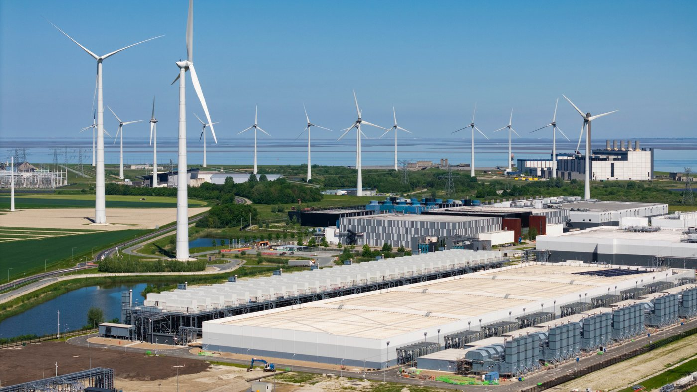
模型可以在簡報裡無限擴張，安培與變電站不行。國際能源署把數據中心寫進《World Energy Outlook 2026》，等於正式宣布：這場競賽的死穴在電網，不在提示詞。
IEA 官方頁確認這份報告已於二零二六年十一月十九日發布。本報未能打開官方 PDF，以下數字以 Tom's Hardware 對報告的轉述為準。該刊寫，全球各類數據中心現有約 120 吉瓦容量，至本十年底預期再完成 120 吉瓦，其中約 75% 用於人工智能。IEA 用衛星影像追蹤 93 座大型「AI factories」，容量在兩年內由不足 2 吉瓦增至 17 吉瓦，完工後預期合計約 50 吉瓦，被比喻為再加入一個英國的電力需求。電力需求本身據該刊標題，將因約 4 兆美元相關支出而在二零三零年前倍增。Tom's Hardware 把結論寫成：真正的瓶頸不是 AI 晶片，而是電網。同一篇轉述，IEA 分析「尚未顯示」數據中心容量增長與電價上漲之間有明確關係；購電協議近半是可再生能源，但實際發電讓煤與天然氣更接近 60%；數據中心來自煤與天然氣的排放預期到二零三零年上升 70%。
軟件敘事喜歡講模型與市值，工業現實是電從哪裡來、線能不能載、社區會不會反對新建機房。現有的 120 吉瓦是已經插上的負載，再一個 120 吉瓦是未來數年要建成的東西，兩者不能加總成一句「需求爆炸」就當作同一筆帳。衛星數得出工廠，並不表示變電站已經同意。把雲說成無限，只是因為你還沒把電費單打開。
真正的瓶頸不是 AI 晶片，而是電網。Tom's Hardware 對 IEA《World Energy Outlook 2026》的轉述。官方 PDF 本輪未打開。
IEA 分析「尚未顯示」數據中心容量增長與電價上漲之間有明確關係。同上，經 Tom's Hardware 轉述
購電協議近半是可再生能源，但實際發電讓煤與天然氣更接近 60%；數據中心來自煤與天然氣的排放預期到二零三零年上升 70%。同上，經 Tom's Hardware 轉述
現有容量（經 Tom's）
120GW
全球各類數據中心；官方 PDF 未打開
至本十年底再完成（經 Tom's）
120GW
其中約 75% 用於 AI；不可與現有 120GW 寫成同一筆
93 座 AI factories（經 Tom's）
約50GW
衛星追蹤，兩年內由不足 2GW 至 17GW，完工預期約 50GW
來源：IEA 報告頁；Tom's Hardware。圖源：Getty Images（Tom's Hardware 配圖）。120GW 等數字為該刊轉述，不是本報直接引自官方 PDF。
平日稿，分類精選三十三則，含專題在所屬欄重出的短項。各欄底部為該欄熱度排行；同級熱度依內容包原序。圖源註寫在各卡內文區。
CNBC；並參《衛報》
Anthropic 週三以每股 83 美元出售 9.80 億股、募資 813 億美元，週四以代號 ANT 開盤 111.50 美元、收市 97.17 美元。開盤市值被寫成逾 2 兆或近 2.01 兆，收市流通近 1.3 兆、完全稀釋 1.75 至約 1.8 兆，不可併成同一個數字。詳見專題。
Getty Images（CNBC）
加州司法部（官方）
加州總檢察長 Bonta 十九日向 Nvidia 發出調查傳票，詢問先進晶片或機密資料是否可能流向中國，以及公司是否誤導投資者。官方稿把行動聯繫到黃仁勳婚外情報道，並用「被指中國間諜」表述；該指控並非已獲司法認定。這是新的州層調查鉤，不是復職聲明重寫。
加州司法部 og:image（機構卡，非傳票文件）
TechCrunch；判決原文見英國司法機關
英國調查權力審裁處十九日公開判決，確認內政部曾向 Apple 發出技術能力通知，拒絕繼續既不承認也不否認；通知內容是否可公開則另案處理。Apple 歡迎把「曾發出通知」這件事公開。The Record 指爭點是 iCloud 進階資料保護。這不是後門細節已被公開。
TechCrunch（iCloud 示意，非法庭現場）
Intuit 官方；並參 CNBC
Intuit 十九日宣布，以企業價值約 36.8 億美元把 Mailchimp 賣給 Bending Spoons，其中 33.1 億現金、3.68 億為對方股票，預期二零二七年上半年交割，須監管批准。同期 Mailchimp 營收 3.13 億美元，跌 1%。CNBC 指二零二一年收購代價為 120 億美元。
Getty Images（CNBC）
TechCrunch
Nadella 週三在 DealBook Summit 解釋，為何在十月向約六萬名員工提出自願退出方案。他說是為了讓人「感到自己有選擇的主體性」，並否認這是用人工智能直接取代工程師。方案已在十月二十六日官方網誌公布，不是十一月十八日新宣布的裁員。
Spencer Platt／Getty Images（TechCrunch）
Google 官方網誌
Google 十九日宣布，Mac 版 Gemini 應用可在隔離背景視窗執行多步驟任務，涵蓋本機檔案、桌面應用與網頁，並在聊天中提供即時預覽。功能先以英語在美國推出，須要 Apple Silicon 與 macOS Sequoia 15.0 或更新，限十八歲以上個人帳戶及 AI Plus、Pro 或 Ultra 用戶。詳見專題。
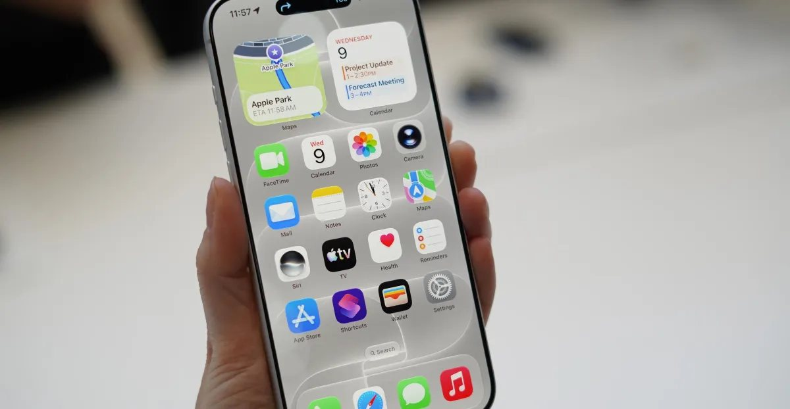
The Verge（轉述 Bloomberg／Gurman）
The Verge 轉述 Bloomberg／Gurman：Apple 職缺描述正在打造可瀏覽、跨應用、寫代碼、呼叫服務並協調子代理人的 AI agent。這是招聘文字，不是已發布產品；本報未打開 Bloomberg 原文。它與 Google 同一天在 Mac 推出 computer use 對讀。
The Verge
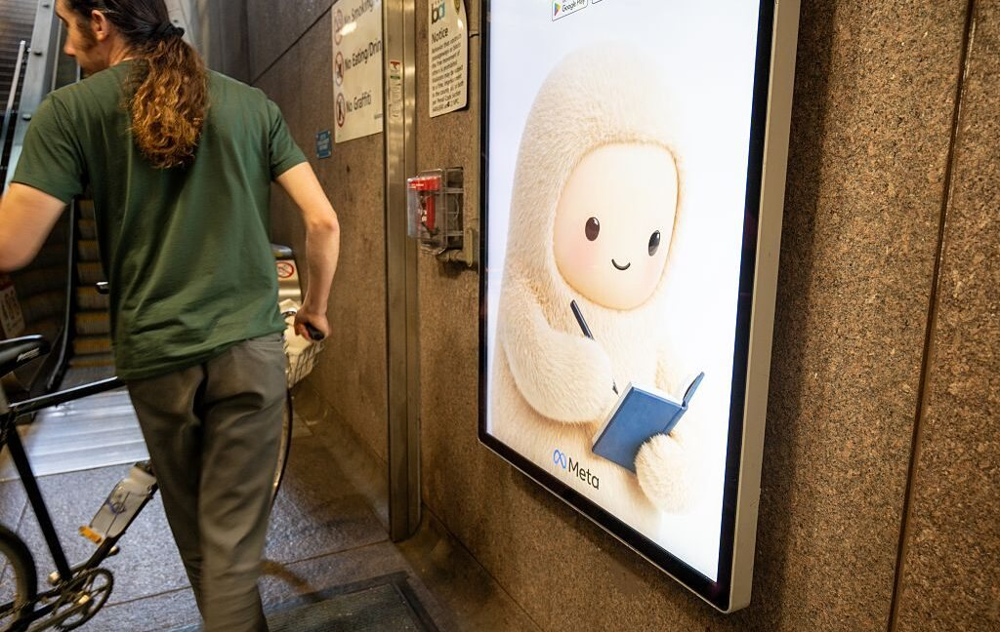
Ars Technica（轉述 Reuters）
Ars Technica 轉述 Reuters 調查稱，內部帖文顯示 Meta 員工擔心 Muse 把不同帳號的對話混在一起，並出現錯置的私人資料。Meta 回應，那些錯置的銀行或比特幣餘額「不是真的」。路透原文本輪未能打開，以上僅據已打開的 Ars 轉述。產品尚未對消費者全面鋪開，內部測試已出現串帳指控。
Getty Images（Ars）
TechCrunch
TechCrunch 根據 S-1 估算，公益基金獲配約 5% 股份，按當時約 95 美元計約值 800 億美元；加上員工認捐與公司配對，記者倒推可能有 1,560 億美元流向慈善。認捐須兌現，且價值隨股價變動。這不是已撥出現金，不宜寫成確定到帳。
Getty Images（TechCrunch）
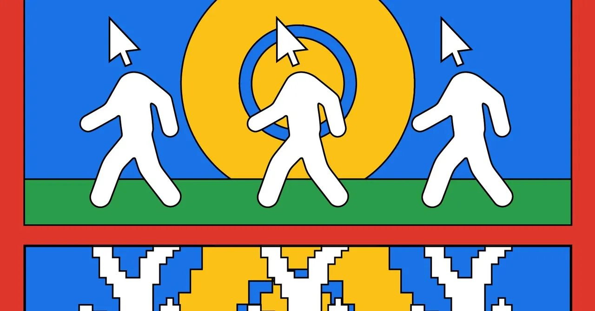
WIRED
WIRED 報道，Google 為 Chrome 團隊建造大型沙盒「Mirror Dimension」，以便在沒有真實網絡失控風險的環境裡訓練瀏覽代理人，其中包含模擬社交與銀行儀表板。這是內部測試基礎設施，不是對公眾開放的產品。
WIRED
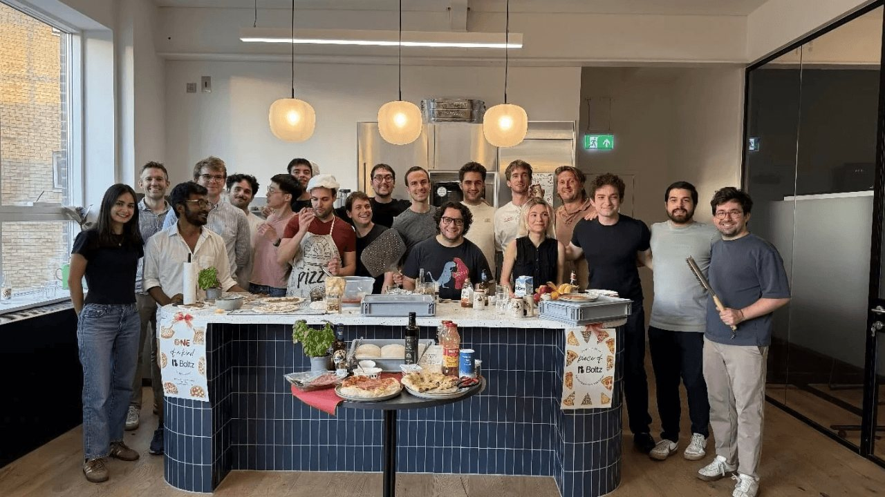
Tech.eu
Tech.eu 報道，從 MIT 分拆、現據點倫敦的 Boltz 完成 1.10 億美元 A 輪，由 Bessemer 領投，業務是加速藥物發現的人工智能模型。該公司二零二五年曾有 2,800 萬美元種子輪。這是 Isomorphic Labs 大額融資之後的另一筆生科模型資金，但是新公司、新輪次，不要寫成同一交易的延續。
Tech.eu／Boltz
GitHub Advisory；並參 BleepingComputer
GitHub Advisory 確認，正牌 Microsoft Agent Framework 套件 agent-framework 的 1.26.1 與 1.26.2 在十一月十七日被植入憑證竊取程式，安裝後不必 import，Python 一啟動就會執行。乾淨版是較舊的 1.26.0。詳見專題。
BleepingComputer
The Register（轉述 Politico 與委員會聲明）
歐盟委員會發言人確認已對偵測到的網路攻擊採取措施，個別系統被針對。The Register 引述稱中斷逾十日，薪資系統 Sysper 與醫療報銷 MyPMO 曾下線。Politico 消息稱攻擊者使用 ARTEX；這是消息來源，不是委員會官方點名。
The Register
美國司法部（官方）
聯邦大陪審團起訴 Igor D’iu，指控其充當外國代理人、跨州 stalking 與文件欺詐；官方稿沒有點名受害公司。起訴書稱他在 Palo Alto 附近拍攝員工筆電螢幕，並跟蹤一名女員工近三十英里。這是指控，尚未判決。
美國司法部預設新聞稿圖（非被告照片）
The Register
The Register 報道，與 The Gentlemen 有關的附屬方聲稱偷了 Nvidia 敏感資料，並設下十一月二十八日期限。Nvidia 稱沒有跡象顯示自身系統或網絡受影響；公開帖文未提供檔案證據。不要寫成 Nvidia 本網已被攻陷。
The Register
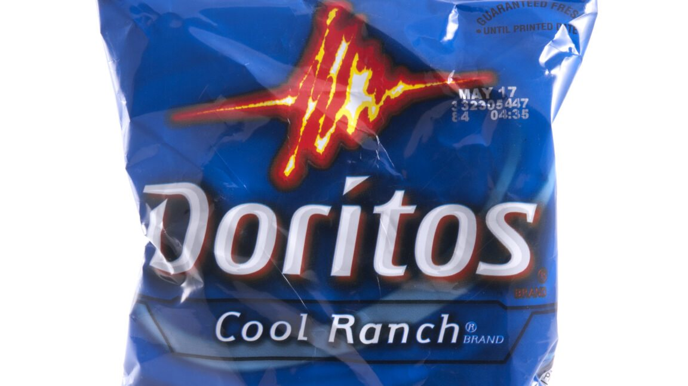
Ars Technica
Ars Technica 報道，學生起訴學校與警方，指人工智能槍械警報被一袋 Doritos 觸發。訴狀主張，該校系統的警報逾百分之九十九是誤報。這是原告在訴訟裡提出的統計，不是獨立審計結論。稿件只處理系統誤報與問責，不渲染涉事未成年人的個人細節。
Getty Images（Ars）
The Verge
The Verge 報道，Microsoft To Do 將於二零二七年六月三十日退休。商務用戶須改用 Planner，任務不會自動遷移；個人帳戶須自行另選應用。Planner 不隨個人或家庭版 Microsoft 365 提供。前身 Wunderlist 的收購價僅屬該刊標明的傳聞。
Microsoft／The Verge
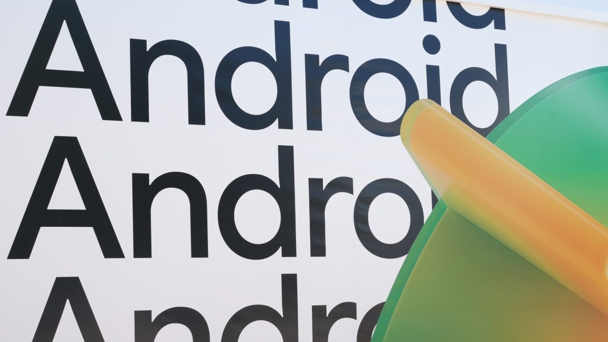
Ars Technica
Ars Technica 報道，Google 稱 Android 應用開發者驗證要求將於二零二七年一月全球推行，並表示幾乎所有開發者已經就位。這項規則牽涉側載與第三方應用來源。本輪未能定位仍有效的官方網誌網址，細節以已打開的 Ars 正文為準，不要自行補上未核實的等待期或國家名單。
Ars Technica（Android I/O 資料照）
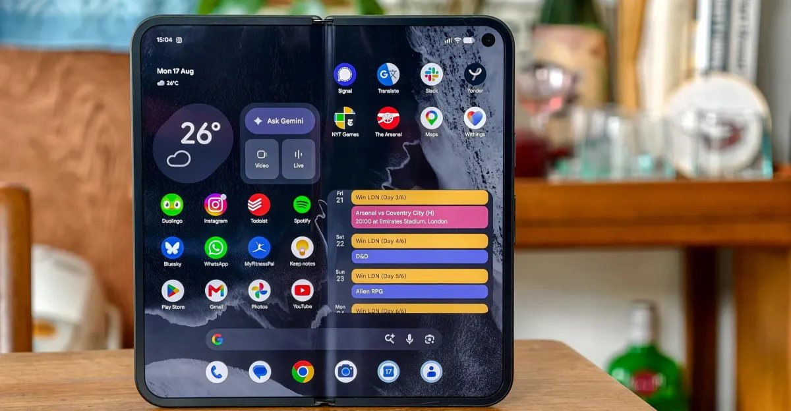
The Verge
The Verge 報道，自二零二七年四月起，Google 要求 Android 應用達到摺疊屏基準支援，否則可能無法發布或更新，或降低 Play 能見度，並須提交三張摺疊屏截圖。遊戲可寬限至八月才須就緒，但四月仍要交截圖。
The Verge（Pixel 摺疊機照片）
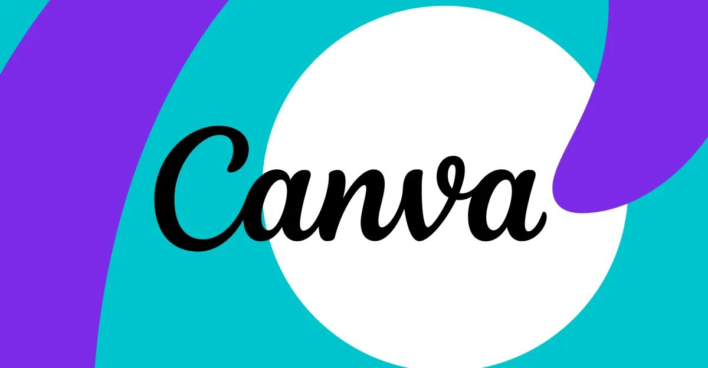
The Verge
The Verge 報道，Canva 讓免費與付費用戶都可以關閉生成式人工智能功能，例如 Magic Expand。報道把改動放在用戶不滿平台強力推送 AI 功能的背景裡。本輪未打開 Canva 官方博文，產品細節以已打開的 The Verge 稿為準。大型設計平台開始把「關掉 AI」當成產品需求，而不只是預設開啟。
The Verge 插畫
TechCrunch
TechCrunch 報道，Uber 正在三個美國城市測試兒童乘車計劃，最低年齡為十歲，並向司機提供額外報酬。這是產品測試，不是全國上路。共乘平台把服務邊界下探到兒童乘車，會立刻引出安全、監護與保險問題。本則只記測試範圍與報酬安排，不渲染個案細節。它與稍早的駕照外洩事件不是同一條新聞。
Getty Images（TechCrunch）
IEA；數字經 Tom's Hardware 轉述
國際能源署十九日發布《World Energy Outlook 2026》。本報未能打開官方 PDF，數字以 Tom's Hardware 轉述為準：全球數據中心現有約 120 吉瓦，至本十年底預期再完成 120 吉瓦，其中約 75% 用於 AI。詳見專題。
Getty Images（Tom's Hardware）
CNBC；做空報告見 Hunterbrook
Hunterbrook 發表《Bank of AMD》並披露做空 AMD，指其有類似英偉達的循環融資。CNBC 側重報告所稱中國敞口，並寫股價收跌逾 7%；公司稱遵守美國法律。報告中的金額是做空方陳述，指控與跌幅必須分開寫。
Getty Images（CNBC）
Financial Times（本報未打開原文）；轉述見 Mobile World Live
Mobile World Live 轉述《金融時報》稱，台積電與三星已告知部分中國客戶，暫停供應若干處理器並申請美國許可；轉述點名的客戶包括百度崑崙、ByteDance、小米、Oppo 與 Vivo。本報未打開 FT 原文，全部須標「據報」。
同類相關圖，非該則新聞原圖。Mobile World Live（示意資料圖）
Politico
Politico 報道，眾議院民主黨於十一月十七日致函 Cantor Fitzgerald，要求保存與出口管制及 Lutnick 家族 Nvidia 利益有關的材料。Cantor 稱指控不準確，並無重大自營倉位，亦不參與實體清單決策。民主黨目前還不能強制取證。
Politico og:image（特朗普照片；頁內另有 Lutnick 圖）
Semafor
Semafor 獨家報道，SpaceX 正籌組約 400 億美元晶片融資，擬經特殊目的公司留在資產負債表外並租用 GPU；Apollo 據報承接近一半。本報未見 SpaceX 或 Apollo 官方確認，不要寫成已簽署的確定交易。
Semafor
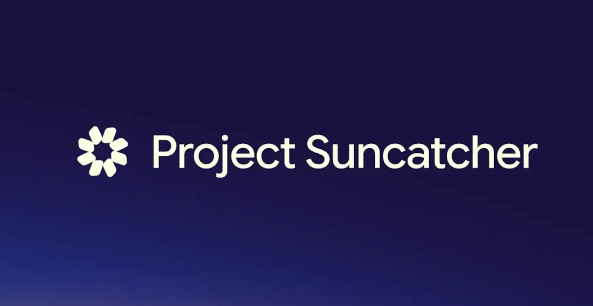
The Verge；並參 Ars Technica
The Verge 報道，Blue Origin 與 Google 宣布，New Glenn 將在二零二九年第一季為 Project Suncatcher 發射搭載 TPU 的衛星，屬該計畫首次專用重型發射。Google 十月已把首顆 AI 伺服器衛星送上太空。Ars 把計畫寫成長期 moonshot。
Google（The Verge 配圖，Suncatcher 標誌）
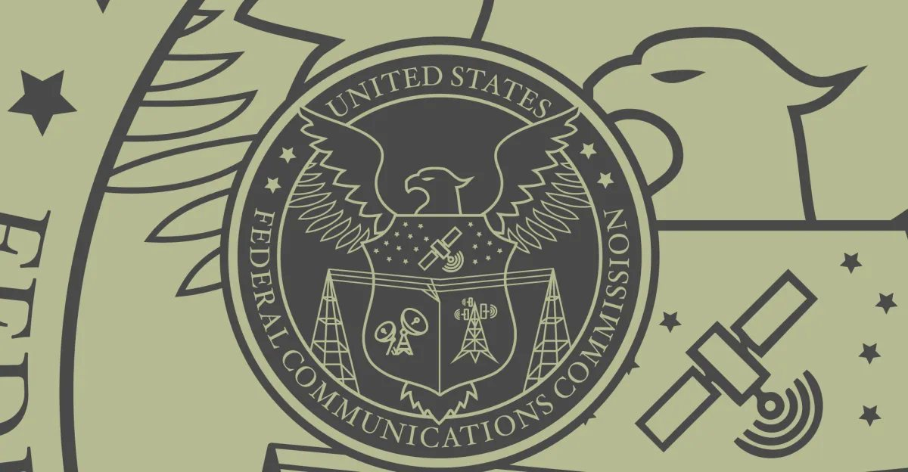
The Verge；並參喬治亞州總檢察長聲明
The Verge 報道，美國聯邦通信委員會通過規則，允許州與地方懲教設施干擾違禁手機訊號；外界擔心可能誤傷包括 911 在內的合法通訊。喬治亞州總檢察長 Chris Carr 聲明寫明，這項命令是「允許而非要求」，並稱這是州與地方監獄首次獲得此類權限。本報未打開 FCC 命令 PDF，細節以已打開報道與聲明為準。
The Verge 插畫
Axios
Axios 引兩名消息來源稱，國家網路總監 Sean Cairncross 將離職，以便白宮在民主黨一月掌握參議院前完成繼任確認；離職被形容為氣氛和緩。白宮截稿前未回應。同一篇提到 CISA 提名人 LoSapio 週四出席聽證會。
Andrew Harnik／Getty Images（Axios：Cairncross 與特朗普，六月二十二日）
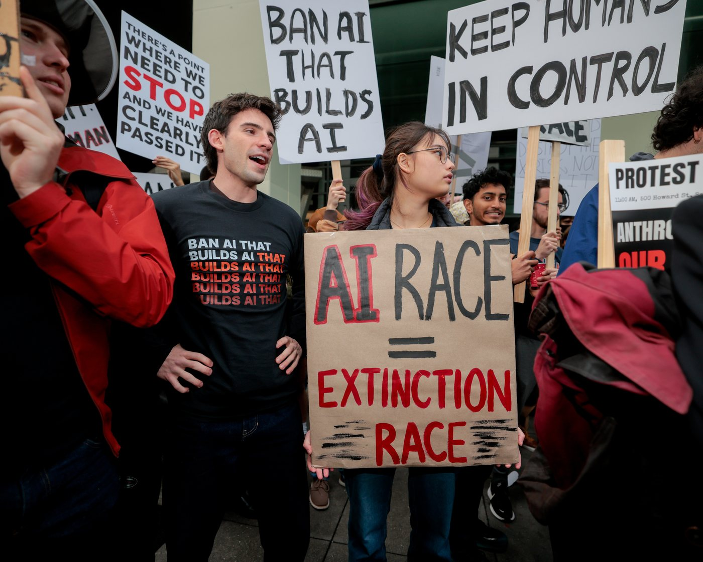
The Guardian
《衛報》報道，反人工智能團體在紐約時代廣場納斯達克交易現場與舊金山 Anthropic 總部前集會，反對公司上市。該刊標題採用開盤約 2 兆美元的估值，與收市流通近 1.3 兆的口徑不同，引用時須分開。這是上市首日的社會反應，不是對募資數字的更正，也不是對收市估值的獨立核算。
The Guardian og:image
Ars Technica
Ars Technica 報道，Windows Server 2028 公開預覽引入 Hardened Server Core，預設安全設定對齊美國國防部標準，但可能犧牲部分相容性。官方新聞稿本輪未找到有效網址，細節以已打開的 Ars 正文為準。
Ars Technica（機房資料照）
TechCrunch
TechCrunch 報道，Snap 推出 Easy Lens CLI，讓開發者用自然語言描述 AR Lens，並透過 Claude Code、Cursor 等外部編碼工具完成流程，支援 Mac、Windows 與 Linux。這是接到現有編碼代理人生態，不是 Snap 自研封閉模型。
Getty Images（TechCrunch）
TechCrunch
TechCrunch 報道，由前阿里巴巴高管創辦的 Everful 完成 4,850 萬美元 A 輪，用於擴展把零售商與中國工廠直接連起來的採購平台。本輪未打開公司官方新聞稿，輪次與金額以已打開的 TechCrunch 報道為準。這是供應鏈軟件融資，不是晶片出口管制本身的新規則。
Everful／TechCrunch（創辦人照片）
每日 IT 報 · 2026年11月20日 · 星期五
資料視覺專題版。選稿窗涵蓋 18 日傍晚至 20 日朝早。數字分源呈現，不合併。